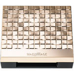
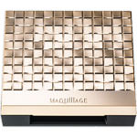

マキアージュ ドラマティックムードヴェール （シルキー）がセットできる専用ケースです。
ブラシ付きです。
【使用上の注意】
・ブラシがセットされている透明の枠は捨てず、ブラシ置きとしてご使用ください。
・ブラシがよごれるとパウダーがつきにくくなりますので、いつも清潔にしてお使いください。
ブラシがよごれたときは、ぬるま湯に中性洗剤をうすくとかして軽く振り洗いをし、洗剤が残らないように十分すすいだ後、
乾いたタオルで水気をきり、かたちを整えて日かげでよく乾かしてからお使いください。
・ケースがスムーズに開閉できなくなった場合は、新しいケースをお求めください。